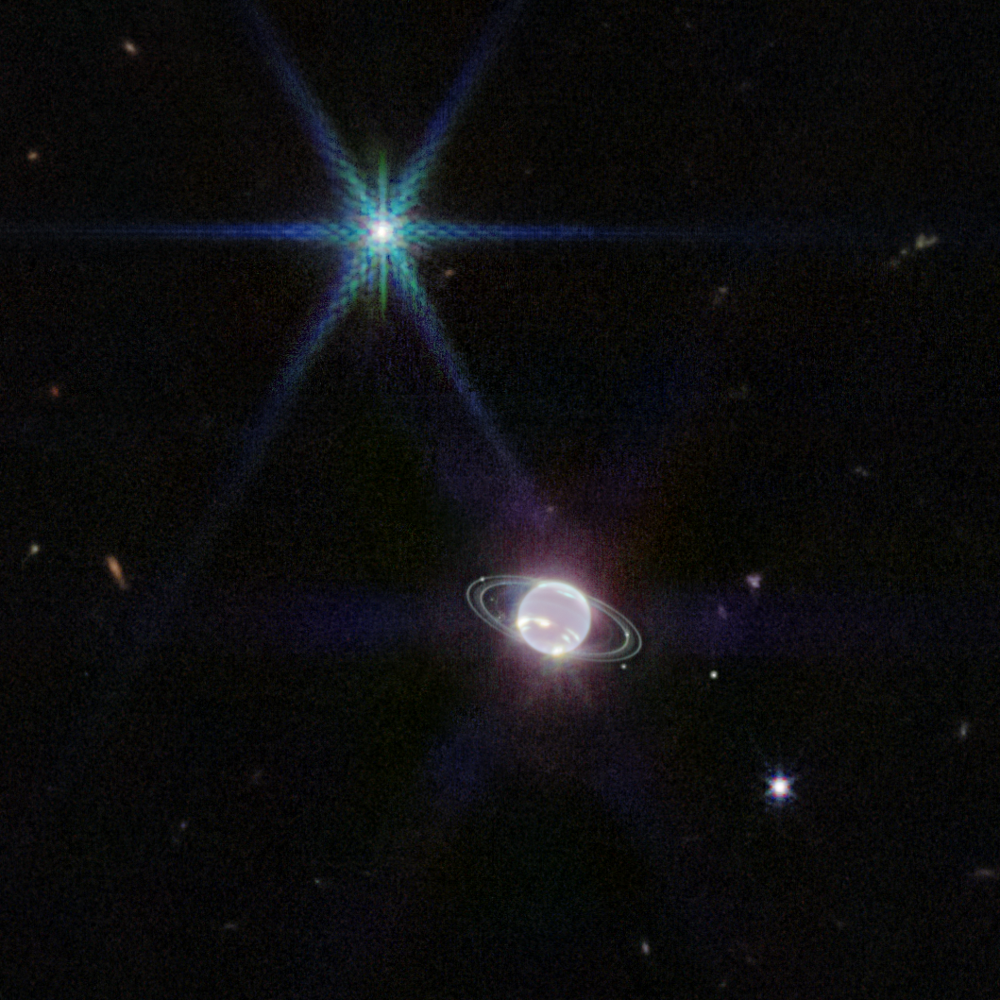
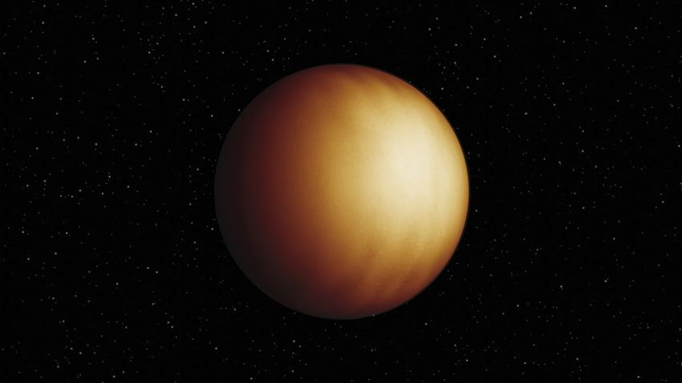

Home
Gallery
History
Games
galaxies Stephan's Quintet
Cassiopeia
Jupiter
NGC 346 MIRI
Herbig-Haro-211
Acantilados cosmicos
The Cartwheel-Galaxy

view of Neptune
Nebulosa del Anillo MIRI
Nebulosa del Anillo – NIRCam

Avispa-18b
Barra de Orión
Exoplaneta rocoso
Pillars of Creation
Exoplaneta WASP-96 b
×